Efficient Face Matching Techniques with K-Means and Principal Component Analysis using Spark distributed Framework.
CS Graduate Students at University of North Carolina Charlotte
Our Team

Nitish Rangarajan

Lakshminarayana Achar
Results
Comparing Image dataset with a file in the imageset
The results below are for comparison with gates_1.jpg ----->
-
Linear vs K-Means Accuracy
Linear K-Means
-
 gates_1 gates_1
gates_1 gates_1 - gates_2 gates_2
- gates_5 gates_5
- gates_12 gates_12
- gates_3 gates_3
- gates_8 gates_8
- gore_150 gore_150
- gore_112 gore_118
- gore_100 jobs_0
- gore_96 jobs_19
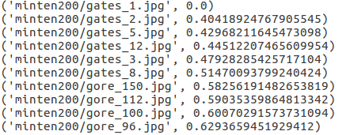 ---- 70 % accuracy --->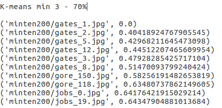
-
-
Linear vs PCA Accuracy
Linear PCA
- gates_1 gates_1
- gates_2 gates_12
- gates_5 gates_5
- gates_12 gates_2
- gates_3 gates_3
- gates_8 gore_129
- gore_150 gates_8
- gore_112 gore_144
- gore_100 gore_118
- gore_96 jobs_16
---- 60% Accuracy --->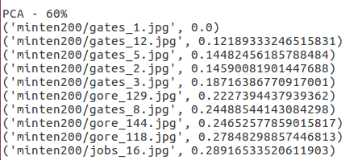
-
Comparing Image dataset with a face not in the imageset
The results below are for comparison with cook1.jpg ----->
-
Linear vs K-Means Accuracy
Linear K-Means
- jobs_16 jobs_16
- jobs_0 jobs_0
- jobs_58 jobs_58
- gates_8 gates_8
- adrienbrody_78 adrienbrody_78
- jobs_19 jobs_19
- gates_12 gates_12
- jobs_40 jobs_40
- jobs_36 jobs_36
- jobs_10 jobs_10
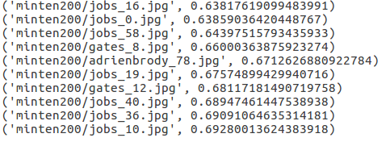 ---- 100% accuracy --->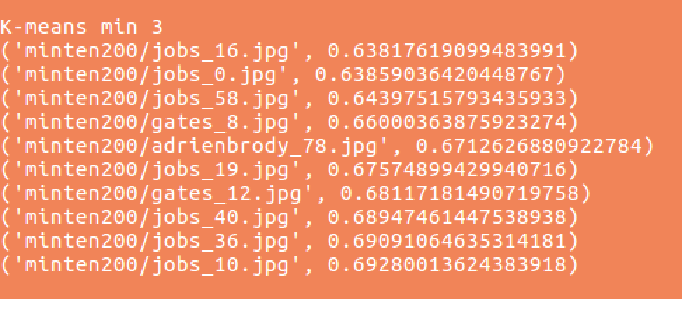
-
Linear vs PCA Accuracy
Linear PCA
- jobs_16 jobs_16
- jobs_0 gates_8
- jobs_58 jobs_40
- gates_8 jobs_59
- adrienbrody_78 gates_12
- jobs_19 jobs_36
- gates_12 jobs_58
- jobs_40 jobs_9
- jobs_36 jobs_23
- jobs_10 carter_62
---- 70 % accuracy --->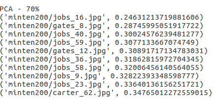
Comparing Image dataset with a look-alike face to a person in the dataset
The results below are for comparison with gateslike_2.jpg ----->
-
Linear vs K-Means Accuracy
Linear K-Means
- gates_12 gates_12
- gates_5 gates_5
- gates_3 gates_3
- gates_1 gates_1
- gates_2 gates_2
- gore_100 gates_8
- gates_8 gore_129
- gore_129 gore_150
- gore_150 gore_131
- gore_131 gore_144
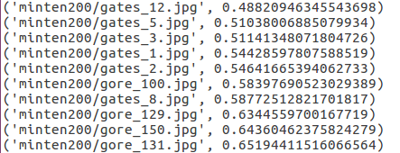 ---- 90% accuracy --->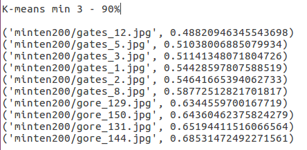
-
Linear vs PCA Accuracy
Linear PCA
- gates_12 gates_12
- gates_5 gates_1
- gates_3 gates_3
- gates_1 gates_2
- gates_2 gates_5
- gore_100 gates_8
- gates_8 gore_144
- gore_129 gore_129
- gore_150 gore_118
- gore_131 gore_103
---- 70% accuracy --->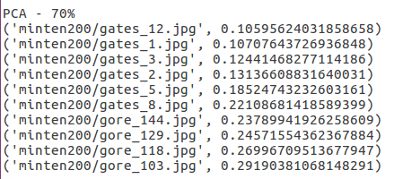
Comparing Image dataset with a input file having two faces
The results below are for comparison with gatesjobs1.jpg ----->
-
Linear vs K-Means Accuracy
Linear K-Means
- jobs_19 gore_96
- jobs_0 gore_111
- jobs_59 gore_146
- jobs_58 gore_112
- jobs_28 gore_115
- jobs_9 gore_103
- gore_96 gore_99
- gates_3 gore_95
- gates_1 gore_100
- jobs_55 gore_110
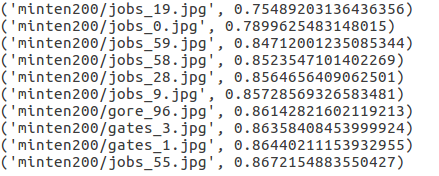 ---- 10 % accuracy --->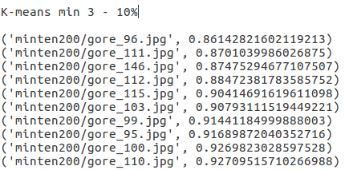
-
Linear vs PCA Accuracy
Linear PCA
- jobs_19 jobs_0
- jobs_0 jobs_16
- jobs_59 gates_1
- jobs_58 gates_2
- jobs_28 jobs_19
- jobs_9 jobs_58
- gore_96 jobs_55
- gates_3 gore_129
- gates_1 jobs_59
- jobs_55 gates_12
---- 70% accuracy --->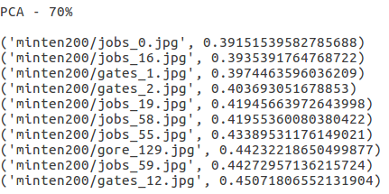
Comparing Image dataset with a input face available in some images
The results below are for comparison with obama.jpg ----->
-
Linear vs K-Means Accuracy
Linear K-Means
- adambrody_14 adambrody_14
- adambrody_21 adambrody_21
- adambrody_6 adambrody_6
- gore_97 adambrody_7
- adambrody_7 adambrody_15
- gates_5 adambrody_18
- adambrody_15 adambrody_22
- adambrody_18 michelle_281
- adambrody_22 michelle_220
- michelle_281 michelle_259
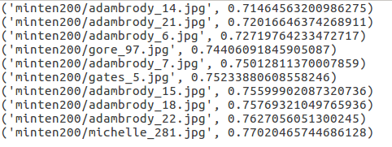 ---- 80% accuracy --->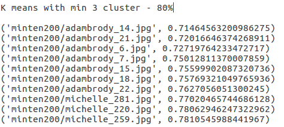
-
Linear vs PCA Accuracy
Linear PCA
- adambrody_14 adambrody_16
- adambrody_21 adambrody_21
- adambrody_6 adambrody_6
- gore_97 adambrody_15
- adambrody_7 adambrody_14
- gates_5 carter_74
- adambrody_15 adambrody_1
- adambrody_18 adambrody_18
- adambrody_22 jobs_29
- michelle_281 gore_97
---- 60% accuracy --->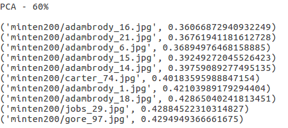
Time Computation results for first gates_1.jpg
Linear Comparison Computation time -------> 155.474338055 seconds
K-Means Comparison Computation time -------> 93.594383955 seconds
PCA Comparison Computation time -------> 16.2009830475 seconds
Note :- the above results are for dataset of 200 images of 10 personalities with different variations